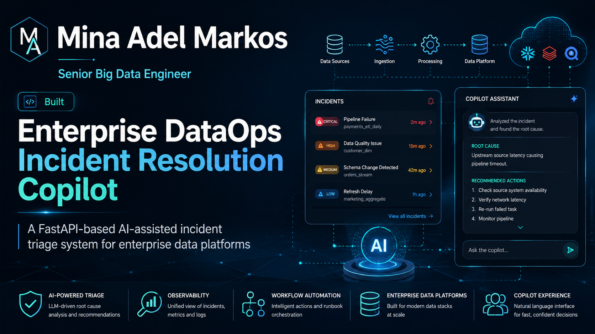

AI & Intelligent Systems
InvestiNator — DataOps Incident Investigation
Correlate telemetry and incident context, investigate with read-only tools, require approval, and verify recovery against evidence.
Local demo; production release blocked
Python · FastAPI · Next.js · PostgreSQL · Kafka · OpenAI (optional)
Executive Summary
Platform incidents scatter evidence across services, slowing the path from a symptom to an auditable recovery decision. Correlate telemetry and incident context, investigate with read-only tools, require approval, and verify recovery against evidence.
Business Context
Data platform operators need to distinguish upstream causes from downstream symptoms. The public Pages UI uses synthetic scenarios, while the local Compose stack provides the API-backed workflow. Neither is a deployed enterprise monitoring service.
Technical Architecture
- Local Kafka producer / consumer + simulated ReplayLab fault signals
- FastAPI telemetry → threshold rules → topology correlation
- PostgreSQL incident, evidence, approval and audit state → Next.js operator UI
- Read-only tools → optional configured OpenAI Responses; model output cannot authorize writes
- Policy / approval → allowlisted simulated recovery → metric verification
Engineering Challenges
Correlated alerts do not prove causality. Telemetry provenance, event time, tenant boundaries and explicit uncertainty must survive the investigation. A real local Kafka workload must not be confused with the injected disk-pressure scenario.
Architecture Decisions
The architecture documents separate evidence retrieval from model reasoning and action policy. PostgreSQL makes incident and approval state persistent; FastAPI exposes the workflow and Next.js presents it. These are observable implementation choices, not evidence of an exhaustive vendor comparison. A rule-only workflow is a useful alternative baseline for stable incidents.
Implementation
The reviewed main branch includes the Python/FastAPI default backend, SQLAlchemy/Alembic persistence, local Kafka workload, replay scenarios, read-only investigation tools and optional OpenAI integration. A Java foundation exists, but the README flags later operator/security work on feature/java-ai-audit as unmerged; do not present that branch roadmap as the main deployment. Public chat is offline by default and can use a separately configured gateway.
Reliability and Security
The documented action executor is limited to a simulated allowlisted recovery. Demo identity is not production OIDC/RBAC. Redaction and evidence-ID validation are implemented boundaries; they do not establish production tenant isolation or a security certification. Public preview has no production connectors or infrastructure write authority.
Business Value
Expected value: reduce evidence-gathering friction and make incident decisions reviewable. No measured reduction in incident investigation time, outage loss or operational cost is claimed. Offline workflow tests measure demo behavior, not enterprise RCA accuracy.
Evidence and validation boundary
Status: Local demo; production release blocked. Reviewed 22 November 2026.
Reviewed repository revision: 06d036da2770. Code presence is distinct from executed runtime behavior.
- docs/architecture.md
- docs/security.md
- docs/ai-design.md
- tests/test_workflow.py
- tests/test_platform.py
- scripts/smoke_demo.py
- apps/showcase/src/App.tsx
- src/incident_copilot/api.py
Current local test outcomes and unexecuted checks. CI and test evidence is separated from production readiness; the validation record includes retrieved checks at the reviewed revision.
Remote check runs returned for this revision:
- publish: completed / success
- public-investigator: completed / success
- frontend: completed / success
- java-scaffold: completed / success
- backend: completed / success
- showcase: completed / success

Future Improvements
Validate production identity and isolation; evaluate connector freshness and failure handling; benchmark supported-diagnosis time against a human/rule baseline; review the separate Java branch and release gates before any production cutover.